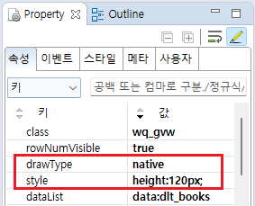
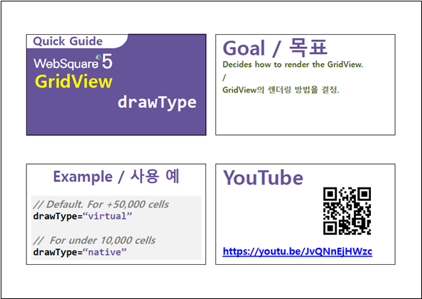

GridView를 브라우저에 표현(Rendering)하는 방식의 설정 예제입니다. 설정을 통해 GridView와 연결된 DataList의 전체 데이터를 기반으로 table을 만드는 방법으로 변경할 수 있습니다.
[기본 설정] WebSquare 방식 (화면에 노출되는 영역만 table로 출력)
Native 방식 (데이터를 table로 모두 출력)
각 영역에 표현된 GridView의 세로 스크롤 이동을 통해 비교할 수 있습니다. WebSquare 방식 : 세로 스크롤 이동 시 데이터만 변경됩니다. Native 방식 : tbody영역의 요소가 이동됩니다. 또는 브라우저의 [개발자도구]를 통해 만들어진 table을 비교할 수 있습니다.
DataList 생성 및 연결은 생략되었습니다.
GridView의 속성을 정의합니다.
[필수] drawType="native" //GridView를 브라우저에 표현할 때 전체(데이터의 행 수 만큼)를 그립니다.
native : gridView 세로 스크롤 처리를 브라우저에 위임하므로 세로 스크롤이 움직임이 자연스러우며 데이터가 적은 경우 유리합니다.
virtual : 화면에 보이는 영역만 렌더링하므로 대용량 그리드에서 성능 유리합니다.
gridView Row별 height가 각각 다른경우 drawType="native"를 권장합니다.
[필수] style="height:120px;" //GridView의 높이값. (visibleRowNum 속성을 무시되므로 필수로 정의해야 합니다.)
그림 1.[웹스퀘어5 SP5 스튜디오의 Property View(속성창) 예시]

<!-- gridView 의 소스 본문 예시 --> <w2:gridView drawType="native" style="height:120px;" dataList="data:dlt_books" > <!-- 중략 --> </w2:gridView>
drawType
[웹스퀘어5 SP5 개발 가이드] GridView
링크 : https://docs1.inswave.com/sp5_user_guide/86bdcf48029b958b
[웹스퀘어5 SP5 개발 가이드] GridView drawType
링크 : https://docs1.inswave.com/sp5_user_guide/86bdcf48029b958b#265be706ddae44d2
GridView drawType
링크 : https://youtu.be/JvQNnEjHWzc
